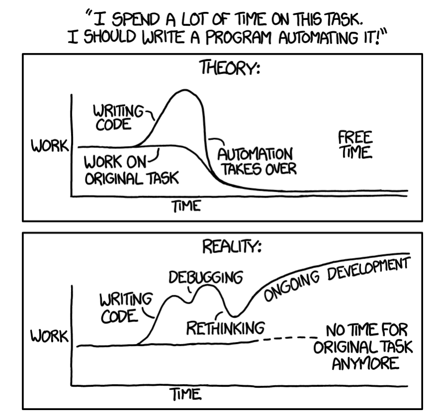
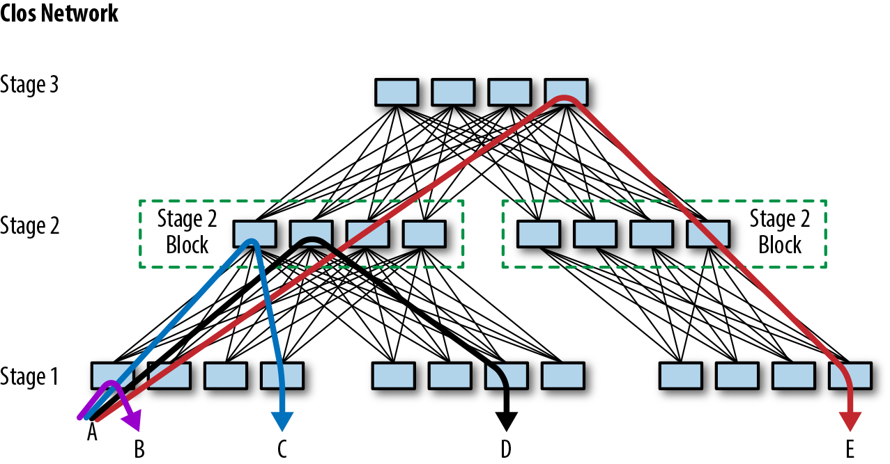
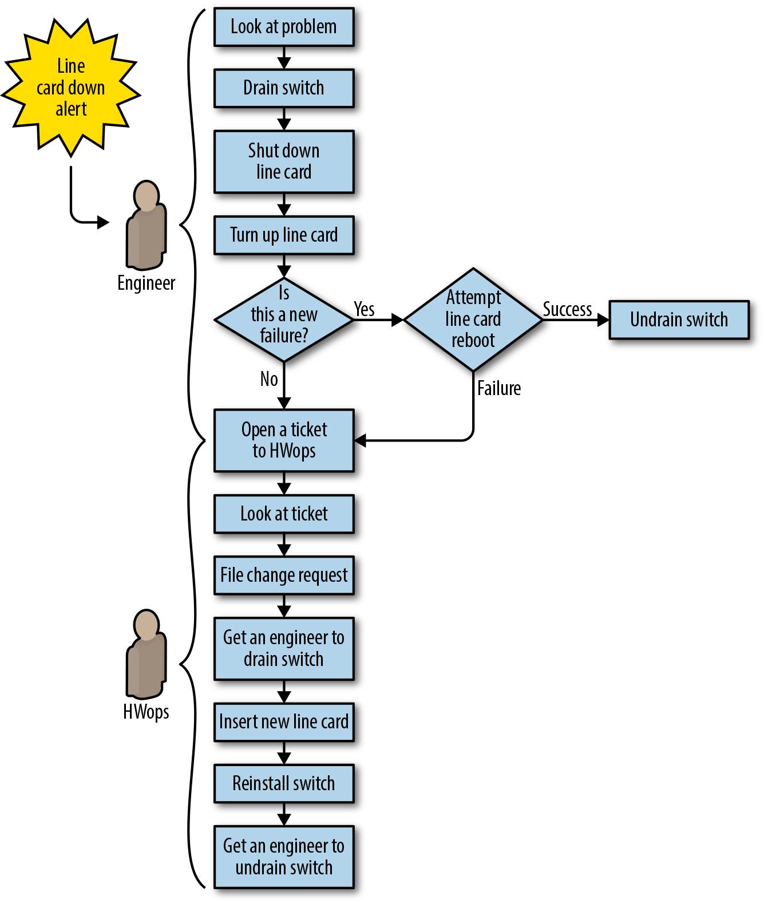
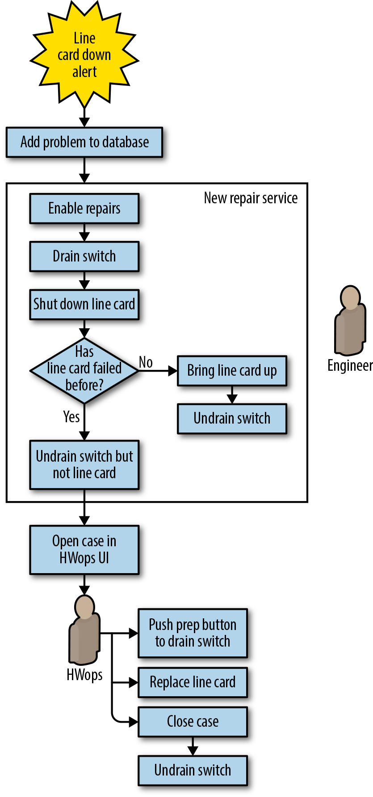
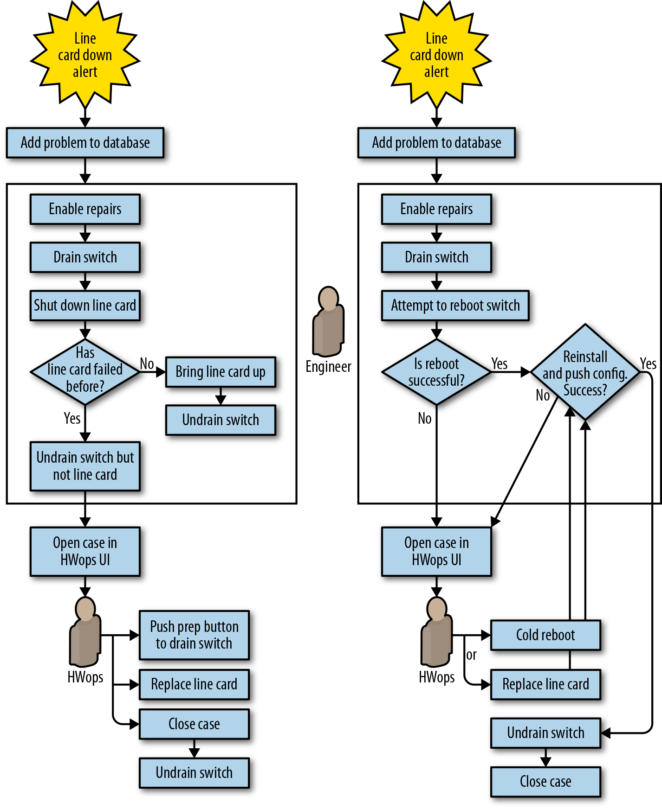
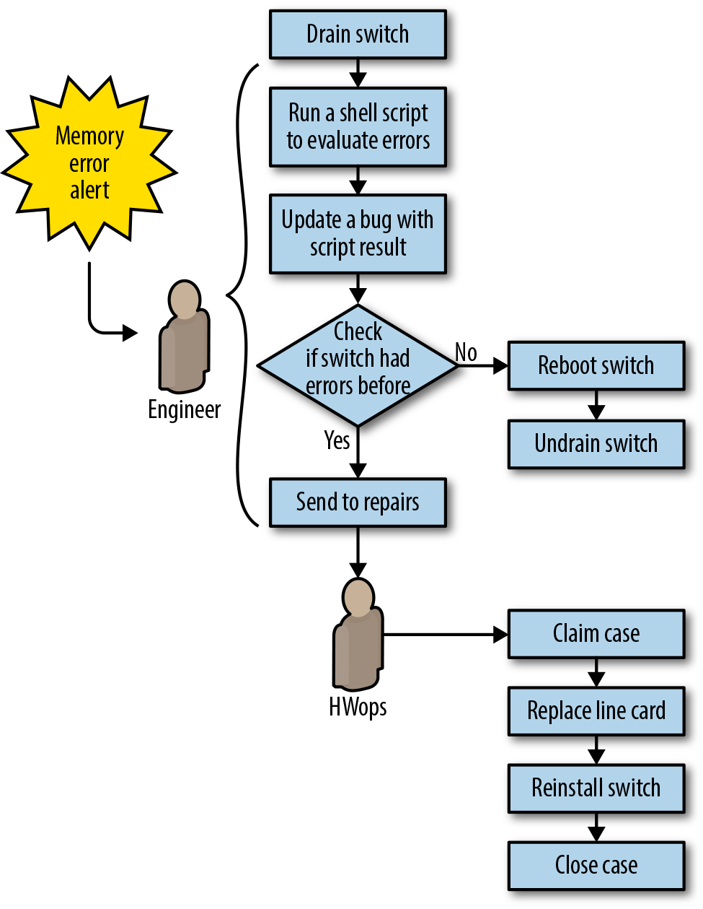
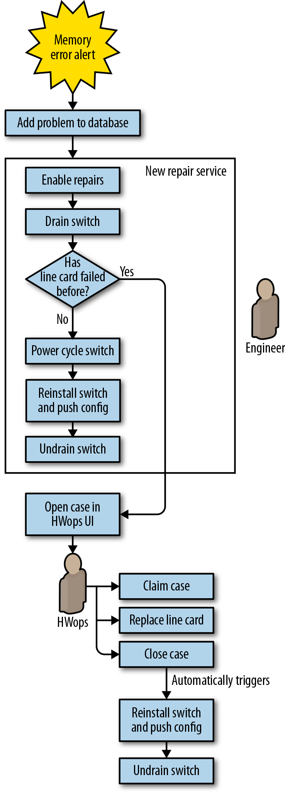
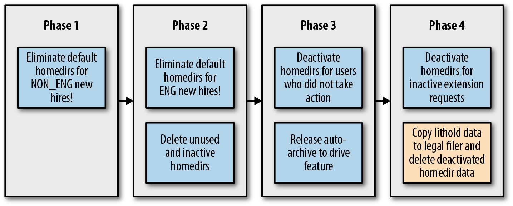
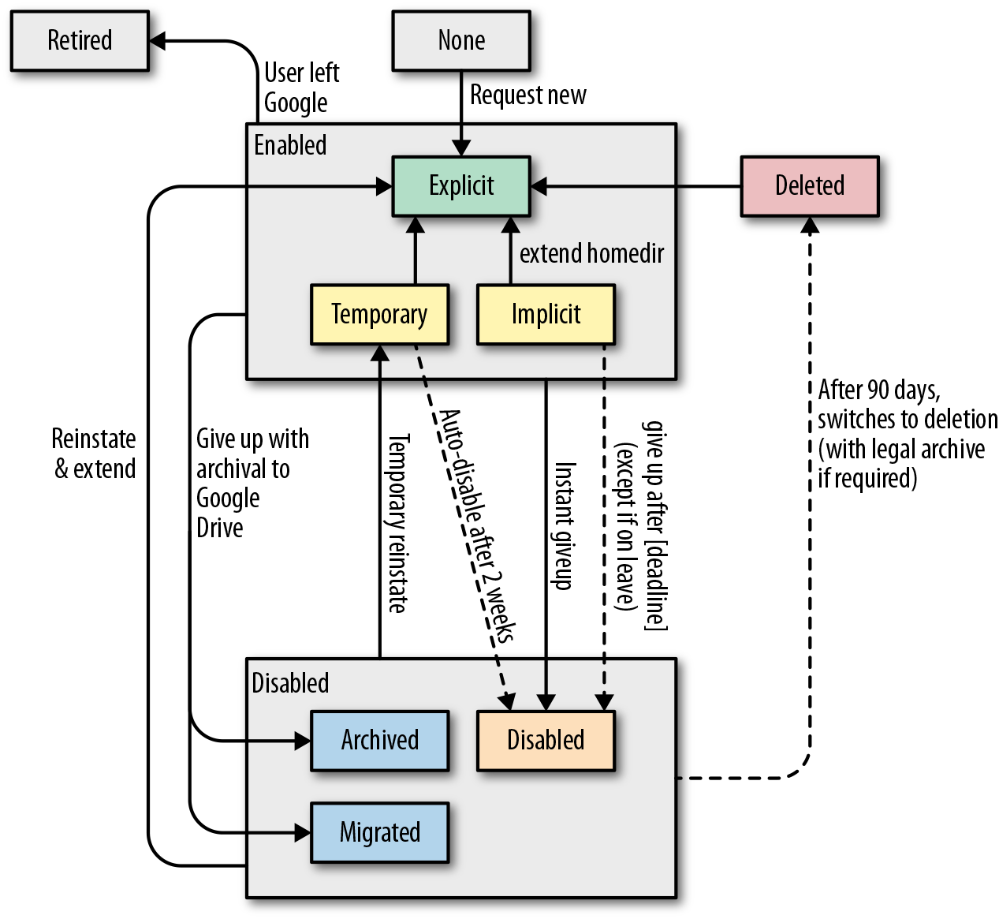

Google 的 SRE 会花大量时间做优化：通过项目工作以及与开发人员协作，尽可能挖掘系统的每一分性能。不过，需要优化的不只是计算资源，SRE 如何使用自己的时间同样重要。我们首先要避免承担可归为运维琐事（toil）的任务。关于运维琐事的完整讨论，请参阅第5章（《网站可靠性工程》）。本章将运维琐事定义为：维护服务时反复出现、可以预见且持续不断的一系列任务。
对于任何负责生产服务的团队，运维琐事似乎都难以避免。系统维护必然需要一定量的发布、升级、重启和告警分诊等工作。如果不加约束、也不进行核算，这些活动很快就会吞噬整个团队。Google 规定 SRE 团队用于运维工作的时间不得超过 50%，其中既包括琐事，也包括不属于琐事的运维工作（原因详见我们第一本书的第5章）。这个目标未必适合你的组织，但为琐事设定上限仍然大有裨益，因为识别并量化琐事，是优化团队时间使用方式的第一步。
运维琐事并非非黑即白，而是分布在一个连续谱上，可以用我们第一本书介绍的以下特征来衡量。下面为每项特征各举一个具体例子：
当 Web 服务器上的 tmp 目录使用率达到 95% 时，工程师 Anne 会登录服务器，遍历文件系统，找出并删除多余的日志文件。
tmp 目录被占满不太可能只发生一次，因此修复它的任务会反复出现。
如果团队的故障处理文档写着“登录 X，执行这条命令，检查输出；如果看到……就重启 Y”，那么对具备软件开发能力的人来说，这些指令本质上就是伪代码！在 tmp 目录的例子中，解决方案已经实现了部分自动化。如果连脚本都不需要人来运行，而是把问题检测和修复全部自动化，会更好。更进一步，还可以提交补丁，从根本上避免软件再次以这种方式出错。
如果“磁盘已满”“服务器宕机”一类告警过多，就会分散工程师处理更高价值工程工作的注意力，还可能掩盖其他更严重的告警，最终损害服务健康状况。
完成任务往往会带来令人满足的成就感，但这种反复获得的满足从长远看并不是好事。例如，关闭告警生成的工单，确实能保证用户查询继续流转、HTTP 请求继续返回小于 400 的状态码。然而，今天处理完这张工单并不能防止问题日后重现，因此收益十分短暂。
许多运维工作的增长速度与底层基础设施的规模相同，甚至更快。例如，硬件维修耗费的时间通常会与服务器集群规模同步增长。实体维修工作或许不可避免地随机器数量增长，但相关的辅助任务（如修改软件或配置）未必也要如此。
造成琐事的工作不一定同时符合上述所有标准，但要记住，琐事有许多不同形态。除了这些特征，还应考虑某项工作对团队士气的影响：人们是否喜欢做它，并能从中获得成就感？还是因为它枯燥、回报感低而总被搁置？2琐事会一点点消磨团队士气。花在琐事上的时间，通常也就无法用于深入思考和发挥创造力。减少琐事，意味着承认工程师的精力应当用在人类判断力和创造力真正能够发挥作用的地方。
怎样判断运维工作中有多少属于琐事？决定采取措施减少琐事之后，又怎样判断投入是否成功、是否值得？许多 SRE 团队依靠经验和直觉回答这些问题。这种做法或许能取得成果，但我们还能做得更好。
经验和直觉既不可重复，也不够客观，更无法轻易传递。同一团队或组织的成员，对琐事浪费了多少工程投入往往会得出不同结论，因此对治理工作的优先级判断也不同。此外，减少琐事的工作可能持续数个季度，甚至数年——本章的一些案例正是如此。在此期间，团队的优先事项和人员都可能变化。要长期保持方向并证明成本合理，就需要客观衡量进展。团队通常还要从多个候选项目中选择一个。客观衡量琐事，才能比较问题的严重程度并合理排序，使工程投入获得最大回报。
开始减少琐事的项目之前，必须分析成本与收益，并确认消除琐事节省的时间，至少应与开发并持续维护自动化方案所投入的时间相当（见图6-1）。如果只简单比较投入与节省的工时，有些项目看起来可能“不划算”；但考虑到自动化带来的许多间接或无形收益，它们仍可能非常值得实施。这些潜在收益包括：
随着时间推移，可投入工程项目的精力增加，其中一部分项目还会进一步减少琐事
提升团队士气，降低人员流失和倦怠
减少处理中断事件时的上下文切换，提高团队生产力
让流程更清晰、更标准化
提升团队成员的技术能力，促进职业发展
缩短培训时间
减少人为错误造成的故障
改善安全性
缩短对用户请求的响应时间

那么，我们建议如何衡量运维琐事呢？
识别琐事。第一本 SRE 著作的第5章给出了从运维工作中识别琐事的指导。由谁来识别最合适，取决于组织自身情况。理想情况下，应由相关利益方参与，包括实际执行这些工作的人。
选择合适的度量单位，用来表示投入这项琐事的人力。分钟和小时是自然的选择，因为它们客观且人人都能理解。还要计入上下文切换的成本。如果工作分散或零碎，也可以采用其他广为理解的人力投入单位，例如一次补丁应用、一张已处理工单、一次手动生产变更、一轮可预见的邮件往来或一次硬件操作。只要单位客观、一致且含义清楚，就可以用来衡量琐事。
在减少琐事的工作开始前、进行中和完成后，都要持续跟踪这些指标。应使用工具或脚本简化采集过程，别让度量琐事本身又制造出新的琐事！
运维琐事像摇摇欲坠的桥梁或漏水的大坝一样，隐藏在平淡无奇的日常工作中。本节所列类别并不完备，只涵盖一些常见类型。其中许多看起来就是“正常”的工程工作——事实也确实如此。因此，把琐事理解为连续谱，而不是二元分类，会更有帮助。
这可能是最常见的琐事来源。团队也许负责某类计算资源——计算、存储、网络、负载均衡器、数据库等——以及承载这些资源的硬件。你们要接入新用户，配置并保护他们的机器，执行软件更新，还要增减服务器以调节容量；同时也要尽量降低这些资源的成本或浪费。团队实际上成了人与机器之间的接口，通常通过工单响应内部客户的需求。组织甚至可能同时存在多套工单和工作受理系统。
工单型琐事颇为隐蔽，因为工单驱动的业务流程通常确实能够达成目标。用户得到了所需结果，而琐事往往均匀分散在全队，不会显眼到主动要求治理。只要存在工单驱动的流程，附近就可能在悄悄积累琐事。即使暂时没有明确的自动化计划，也可以先简化、精炼流程：这样以后更容易实现自动化，在此之前也更便于管理。
无论是自有硬件还是使用基础设施提供商（云服务），成本工程和容量规划通常都伴随着一些琐事。例如：
为计算、内存、IOPS（每秒输入/输出操作次数）等资源规划既经济又能应对突发需求的基础容量。这可能转化为采购订单、AWS 预留实例，或云服务/基础设施即服务合同谈判。
为产品发布、节假日等关键高流量事件做好准备，并在事件后恢复常态。
审查上下游服务的服务等级和限制。
针对不同的资源配置优化工作负载。（是购买一台大型设备，还是四台小型设备？）
针对专有云服务产品的具体计费方式优化应用程序，例如 AWS 的 DynamoDB 或 GCP 的 Cloud Datastore。
重构工具，以便更充分地利用价格较低的“竞价”或“可抢占”资源。
处理资源超额分配问题，无论问题发生在上游基础设施提供商一侧，还是下游客户一侧。
分布式微服务架构已经十分普遍。系统越分散，新的故障模式就越多。组织可能没有资源构建成熟的分布式追踪、高保真监控或详细仪表盘；即使已经配备这些工具，也未必能覆盖所有系统。故障排查甚至可能仍要逐台登录系统，再用脚本工具临时编写日志分析查询。
故障排查本身并不是坏事，但精力应当用于新出现的故障模式，而不是每周重复处理脆弱架构造成的同类问题。每增加一个可用性为 P 的关键上游依赖，组合故障概率就会使可用性下降 1−P。一个可用性为四个 9 的服务，增加九个同样为四个 9 的关键依赖后，整体就只剩三个 9。3
只要在运营具有一定规模的生产系统，管理运维琐事就至关重要。识别并量化琐事之后，还需要制定消除它的计划。这些工作可能需要数周甚至数个季度，因此必须有一套稳固的总体策略。
从源头消除琐事是最佳方案；如果做不到，就必须采用其他方式加以处理。在深入介绍两个案例之前，本节先给出规划减少琐事工作时可以考虑的一些通用策略。两个案例会表明，不同团队乃至不同公司的琐事各有细节，但某些做法对任何规模、任何类型的组织都同样适用。后面的案例至少会具体展示以下每一种模式。
建议采用数据驱动的方法识别和比较琐事来源，客观决定如何治理，并量化减少琐事项目节省的时间，也就是投资回报。如果团队已被琐事压得喘不过气，应把减少琐事作为独立项目来做。Google 的 SRE 团队经常用缺陷记录跟踪琐事，并综合修复成本和可节省时间为其排序。具体方法和指导参见“衡量运维琐事”。
如第2章所述，服务应当有书面的服务等级目标（SLO）。定义良好的 SLO 能帮助工程师做出有依据的决策。例如，如果某些运维任务不会消耗或超出服务的错误预算，就可以选择不做。随着服务增长，关注整体服务健康状况、而不是单台设备的 SLO 更灵活，也更可持续。如何编写有效的 SLO，请参阅第2章。
通过类型明确的接口定义服务内容后（参见“从人工支撑的接口开始”），就应转向让用户自助操作。可以提供网页表单、可执行程序或脚本、API，甚至只需编写文档，说明如何向服务的配置文件提交拉取请求。例如，不再要求工程师提交工单来申请开发用虚拟机，而是提供一个简单的网页表单或脚本来触发配置。对于特殊请求或执行失败，脚本可以平稳降级为工单。4人工支撑的接口是减少琐事的良好起点，但服务负责人仍应尽可能让服务实现自助。
在大规模环境中，生产环境越多样，管理难度就会呈指数增长。特殊设备需要持续进行耗时且容易出错的管理和事件响应。可以采用“宠物与牲畜”的思路5来增加冗余，并强制环境保持一致。哪些对象应视为“牲畜”，取决于组织的需求和规模；网络链路、交换机、机器、整机架，甚至整个集群，都可能被当作可互换单元。
将设备转向“牲畜”式管理可能有较高的初始成本，但从中长期看，可以降低维护、灾难恢复和资源利用成本。多种设备采用统一接口，意味着配置一致、彼此可替换、维护需求更少。为不同设备提供一致的流量导出、流量恢复和关机等接口，也能让自动化更加灵活、更易扩展。
Google 会调整业务激励，鼓励工程团队围绕不断演进的内部技术和工具体系实现统一。团队可以自由选择方案，但必须自行承担不受支持的工具或遗留系统所产生的琐事。
自动化能节省不计其数的人力，但在不恰当的条件下也可能触发故障。一般来说，防御式软件设计总是有益；当自动化掌握管理员级权限时，它更是不可或缺。每项操作在执行前都应评估安全性，包括可能降低服务容量或冗余度的变更。实现自动化时，我们建议遵循以下做法：
即使输入来自上游系统，也要按不可信输入进行防御式处理，并结合上下文仔细验证。
加入与人工操作员可能间接获得的告警信息等效的保护措施。它可以只是简单的命令超时，也可以是对当前系统指标或现有故障数量进行更复杂的检查。因此，监控、告警和检测系统应同时便于机器和人工操作员使用。
要意识到，即使只是读取操作，如果实现得过于简单粗暴，也可能使设备负载骤升并触发故障。随着自动化规模扩大，这类安全检查最终甚至可能成为主要负载。
尽量降低自动化安全检查不完备所造成的故障影响。自动化一旦遇到不安全状态，应默认转交人工处理。
下面的案例展示了刚才讨论的减少琐事策略。每个故事都涉及 Google 基础设施的一个重要领域：它已经无法继续让系统规模以低于人力投入的速度增长；随着时间推移，投入越来越多工程工时，获得的边际回报却越来越小。现在你会认出，其中很大一部分投入就是琐事。我们会逐一说明工程师如何识别、评估和缓解这些琐事，并讨论结果与经验教训。
第一个案例中，Google 的数据中心网络遇到了扩展问题：大量由 Google 设计的组件和链路都需要监控、故障缓解与维修。我们需要一种策略，尽量减少数据中心技术人员在这些工作中承担的琐事。
第二个案例关注一个团队：他们运行一套“离群”的专用硬件，用来支撑在 Google 内部根深蒂固、琐事密集的业务流程。这个案例说明了重新评估并替换运维成本高昂的业务流程能带来什么好处，也表明即使受到大型组织惯性的制约，只要坚持不懈，仍然可以迁移到替代方案。
综合来看，这两个案例为前面介绍的每一种减少琐事策略都提供了具体示例。每个案例开头都会列出与之相关的策略。
这个案例发生在 Google 的数据中心。与其他数据中心一样，Google 的机器连接到交换机，交换机再连接到路由器；流量通过链路进出这些路由器，而链路又连接到互联网上的其他路由器。随着 Google 处理互联网流量的需求增长，承载这些流量所需的机器数量急剧增加。为了高效、经济地服务海量流量，数据中心的规模和复杂度也不断上升。于是，数据中心的人工维修从偶尔出现、颇有挑战性的工作，变成频繁而机械的重复劳动——这正是琐事的两个信号。
Google 最初运营自有数据中心时，每个数据中心的网络拓扑只包含少量网络设备，用来管理大量机器的流量。单台网络设备故障可能严重影响网络性能，但规模不大的工程师团队足以排查这少量设备。早期阶段，工程师会手动调试问题，并把流量从故障组件上移走。
下一代数据中心拥有多得多的机器，并采用折叠 Clos 拓扑的软件定义网络（SDN），交换机数量大幅增加。图6-2展示了一个小型数据中心 Clos 交换网络中流量路径的复杂程度。设备按比例增多，也意味着可能故障的组件更多。虽然单次故障对网络性能的影响比以前小，但问题总量开始压垮工程人员。
复杂的布局不仅带来了大量需要调试的新问题，也让技术人员困惑：究竟要检查哪些链路？应该更换哪块线卡6？第2层交换机与第1层或第3层交换机有什么不同？关闭一台交换机会不会影响用户？

故障线卡维修显然形成了不断增长的积压，因此我们把它作为数据中心网络维修自动化的第一阶段。本案例先介绍如何为第一代线卡 Saturn 引入维修自动化，再讨论下一代 Jupiter 网络架构所做的改进。
如图6-3所示，在自动化项目之前，数据中心线卡维修流程中的每次处理都要求工程师完成以下步骤：
确认可以安全地从受影响交换机导出流量。
把流量从故障设备移走，即执行“导出流量”操作。
重启或维修设备，例如更换线卡。
把流量恢复到设备，即执行“恢复流量”操作。
导出流量、恢复流量和维修设备的步骤固定而重复，是典型的运维琐事。这种重复性还会引发新的问题。例如，工程师处理线卡时可能同时在调试更困难的问题；一旦分心，就可能误把尚未配置的交换机重新接入网络。

我们的总体目标是构建一个系统，让它直接响应网络设备上检测到的问题，而不是依赖工程师分诊和修复。我们不再把“线卡故障”告警发给工程师，而是让软件请求导出流量，并为技术人员创建维修任务。新系统有几个值得注意的特点：
我们尽可能复用现有工具。如图6-3所示，告警系统已经能够检测网络架构中线卡的问题；我们把这些告警改作自动维修的触发器。新流程还复用了工单系统来支持网络维修。
我们内置了自动风险评估，防止导出流量时意外隔离设备，并在必要时触发安全机制，从而消除了一个主要的人为错误来源。
我们采用由软件记录的“累计故障”策略：第一次故障只重启线卡并重新安装软件；第二次故障则触发线卡更换，并把故障卡完整退回供应商。
新的自动化流程如图6-4所示，步骤如下：
系统检测到有问题的线卡，并把相应症状记录到数据库中的具体组件上。
维修服务读取问题并在交换机上启用维修流程。服务先进行风险评估，确认操作不会隔离任何容量，然后执行：
从整台交换机导出流量。
关闭线卡。
如果这是第一次故障，则重启线卡并恢复交换机流量，至此流程结束。
如果这是第二次故障，则进入第3步。
工作流管理器检测到新任务，将它放入维修任务池，等待技术人员领取。
技术人员领取任务后，会在界面中看到红色“停止”标志，表示开始维修前必须先导出交换机流量。随后分三步完成维修：
在技术人员界面中点击“准备组件”按钮，启动机箱流量导出。
等待红色“停止”标志消失，表示流量导出完成，可以开始处理任务。
更换线卡并关闭任务。
自动维修系统重新启用线卡。等待线卡完成初始化后，工作流管理器触发操作，恢复交换机流量并关闭维修任务。

数据中心的容量需求几乎每 12 个月翻一番。因此，下一代数据中心网络架构 Jupiter 的规模超过此前任何 Google 网络架构的六倍，问题数量也扩大了六倍。Jupiter 给维修自动化带来了扩展挑战，因为每一层都可能有数千条光纤链路和数百块线卡发生故障。好在潜在故障点增多的同时，冗余度也大幅提高，使我们能够实施更大胆的自动化。如图6-5所示，我们保留了 Saturn 流程的一些通用部分，并做了几项重要修改：
自动执行流量导出和重启后，如果系统判定需要更换硬件，就把任务交给技术人员。不过，不再要求技术人员点击“准备按钮以导出交换机流量”，而是由系统在交换机故障时自动导出整台交换机的流量。
增加自动化，在组件更换后安装并下发配置。
增加自动验证，确认维修成功后再恢复交换机流量。
优先尝试在不让技术人员介入的情况下恢复交换机，除非确实别无选择。

对于 Jupiter 交换机上的每个线卡问题，我们采用简单统一的流程：将交换机标记为故障、导出流量，然后开始维修。
自动化执行以下步骤：
系统检测到交换机故障，并在数据库中记录相应症状。
维修服务读取问题并在交换机上启用维修：导出整台交换机的流量，并记录导出原因。
如果这是六个月内的第二次故障，转到第4步。
否则，转到第3步。
尝试用两种不同方法对交换机断电重启。
如果断电重启成功，则运行自动验证，再安装并配置交换机。随后删除维修原因、从数据库清除问题，并恢复交换机流量。
如果前面的完整性检查失败，则把任务连同操作说明交给技术人员。
如果这是第二次故障，就直接把任务交给技术人员并要求更换硬件。更换后运行自动验证，再安装并配置交换机；随后删除维修原因、从数据库清除问题，并恢复交换机流量。
新的工作流管理彻底重写了旧维修系统。我们再次尽可能复用现有工具：
配置新交换机所用的安装和验证操作，同样可用于验证更换后的交换机。
快速部署新的网络架构，需要能够以程序方式执行 BERT7 和布线审计8。恢复流量前，我们复用这项能力，对进入维修流程的链路自动运行测试模式，并通过识别故障链路进一步改善性能。
接下来顺理成章的改进，是自动缓解并修复 Jupiter 交换机线卡上的内存错误。如图6-6所示，在自动化之前，这套流程高度依赖工程师判断故障来自硬件还是软件，再酌情导出流量、重启交换机或安排维修。

自动化不再尝试诊断内存错误，从而简化了维修流程（原因参见“不完美的自动化有时已经足够”）。我们改为像处理线卡故障一样处理内存错误。要让自动化覆盖这类错误，只需在配置文件中增加一种症状，使系统对新的问题类型采取行动。图6-7展示了内存错误的自动化处理流程。

在持续数年的网络维修自动化工作中，我们总结出许多如何有效减少琐事的通用经验。
在 Saturn 线卡上，更换线卡需要先导出整台交换机的流量。如果过早执行，等待备件和技术人员期间，交换机上所有正常线卡的可用容量都会损失。我们在界面中加入“准备组件”按钮，让技术人员等到即将更换线卡时才导出整台交换机的流量，从而避免其余部分无谓停机（见图6-5中的“按下准备按钮，导出交换机流量”）。
界面和维修流程的这一设计引发了几个意料之外的问题：
按下按钮后，技术人员看不到流量导出的进度，只能等待系统允许继续操作。
按钮无法可靠地与交换机的实际状态同步。结果，有时交换机已经导出流量却没有得到维修；有时技术人员又会在流量尚未导出的交换机上操作，造成业务流量中断。
没有启用自动化的组件出现问题时，只会返回一条笼统的“联系工程团队”消息。经验较少的技术人员不知道怎样最快找到能提供帮助的人，而被联系的工程师也未必能立即响应。
根据用户反馈，以及功能复杂度导致的回归问题，我们在后续流程中确保技术人员到达交换机之前，交换机已经处于安全且可维修的状态。
我们过度依赖经验丰富的数据中心技术人员来发现系统错误。例如，软件可能显示可以安全维修，但交换机实际上尚未导出流量。此外，还有几项工作必须由技术人员手动完成，却没有自动化提示。
经验很难复制。一次影响尤其严重的事件中，一名技术人员为了加快“按按钮并等待结果”的过程，同时对数据中心内所有待修线卡发起流量导出，造成网络拥塞和用户可见的丢包。软件没有预见并阻止这种操作，因为我们没有让新手技术人员参与自动化测试。
应尽量避免单体式设计。复杂的自动化工作流应由可分离的组件构成，每个组件只负责一项明确任务。早期 Jupiter 自动化的关键组件可以轻松复用或调整，支持后续每一代网络架构；基于已有自动化构建功能，也让新增能力更加容易。后续各种 Jupiter 类网络架构都能利用早期迭代的成果。
我们对 Jupiter 线卡的内存错误问题分析过度。为了精确诊断，我们试图区分可通过重启修复的软件错误和必须更换线卡的硬件错误，还想分辨哪些错误会影响流量、哪些不会。我们用了近三年（2012—2015 年），收集了 650 多个独立内存错误的数据，才意识到这项工作可能做过了头，至少不应让它阻塞维修自动化项目。
一旦决定对检测到的所有错误都采取行动，就很容易复用现有维修自动化，实施一项简单策略：遇到内存错误就导出流量、重启并重新安装交换机。如果问题再次发生，就判断故障很可能来自硬件，并申请更换组件。我们用一个季度收集数据，发现大多数错误都是暂时性的；多数交换机重启并重新安装后即可恢复。执行维修并不需要更多数据，因此把自动化推迟三年并无必要。
在恢复流量前用 BERT 验证链路很有帮助，但 BERT 工具不支持网络管理链路。我们把这些链路纳入现有维修自动化，并通过检查允许它们跳过验证。由于这些链路不承载客户流量，我们认为绕过验证可以接受；如果后来证明验证很重要，再补充这项能力即可。
自动化的生命周期可能很长，因此人员离开或加入团队时，要为项目连续性做好规划。新工程师应接受遗留系统培训，以便修复缺陷。由于 Jupiter 网络架构的零件短缺，Saturn 网络架构远远超过原定退役日期仍在运行，迫使我们在其生命周期很晚的阶段继续加入改进。
自动化一旦采用，可能会长期固化下来，既有好处也有坏处。应尽可能让设计能够灵活演进；依赖僵化的自动化会使系统难以适应变化。基于策略的自动化把意图与通用执行引擎明确分离，有助于让演进过程更加透明。
我们为 Jupiter 构建了新工具，在执行流量导出前评估风险。由于其中的复杂性，又加入了第二道检查，形成纵深防御。第二道检查分别限制受影响链路和设备的数量；任一阈值被突破，系统都会自动创建跟踪缺陷，要求进一步调查。我们不断调整阈值以减少误报。最初这只是主风险评估稳定前的临时措施，后来却证明它还能有效发现断电和软件缺陷造成的异常维修率（示例参见“自动化：让故障规模化”，出自《网站可靠性工程》）。
维修自动化有时会失败，尤其是在刚引入时。管理层的支持对于保护项目、授权团队坚持推进至关重要。建议为消除琐事的自动化设立错误预算。还应向外部利益相关方说明：尽管自动化存在失败风险，它仍不可或缺，并能推动可靠性和效率持续改进。
多年以后，这类文件服务器方案大多已被其他更好的存储方案取代，包括版本控制系统 Piper9/Git-on-Borg10、Google Drive、G Suite Team Drive、Google Cloud Storage，以及名为 x20 的内部全球分布式共享文件系统。这些替代方案在许多方面更具优势：
NFS/CIFS 协议原本就不是为跨广域网运行而设计的，即使只有几十毫秒延迟，用户体验也会迅速恶化。数据只能驻留在一个位置，这会给远程员工和全球分布的团队带来问题。
与替代方案相比，这些设备的运行和扩容成本很高。
要让 NFS/CIFS 协议兼容 Google 的 Beyond Corp11 网络安全模型，需要投入大量工作。
与本章最相关的是，主目录和团队共享会产生大量琐事。存储配置的许多环节都由工单驱动。虽然这些流程往往已有部分脚本化，但仍占据 CDS 团队相当多的琐事时间。我们花大量时间创建和配置共享、修改访问权限、排查最终用户问题，并通过上线和下线操作管理容量。除了配置、更新和备份，CDS 还负责这些专用硬件的采购配置、上架和布线。受延迟要求限制，我们常常必须把设备部署在远程办公室而不是 Google 数据中心；为了管理一次部署，团队成员有时要长途出差。
首先，我们收集数据。CDS 创建了 Moonwalk 工具，分析员工如何使用我们的服务。我们采集日活跃用户（DAU）、月活跃用户（MAU）等传统商业智能指标，并提出“哪些职类确实会使用主目录”“每天使用文件服务器的用户最常访问哪类文件”等问题。Moonwalk 结合用户调查证实，文件服务器当前承载的业务需求，可以由运维开销和成本更低的替代方案更好地满足。另一个有力的商业理由也推动我们摆脱文件服务器：如果能把大多数用例迁移到 G Suite/GCP，就可以用所得经验改进这些产品，进而帮助其他大型企业迁移到 G Suite/GCP。
没有单一替代方案能覆盖文件服务器的所有现有用例。但把问题拆成更小、可处理的组成部分后，我们发现少数几种方案合起来能够覆盖全部用例。它们更加专用，但每一种都比通用的文件服务器方案提供更好的用户体验。例如：
可以保存跨工作站的命令行历史记录
随着我们梳理用例并找到替代方案，停用计划逐渐成形。
摆脱文件服务器是一项持续迭代、历时多年的工作，涉及多个内部项目：
停用主目录
迁移主目录用户中的长尾部分
停用团队共享
停用主目录/共享基础设施及相关硬件
本案例聚焦第一个项目 Moira。后续项目都建立在 Moira 的经验和成果之上。
如图6-8所示，Moira 分为四个阶段。

停用遗留系统的第一步，是阻止新增采用；更现实的做法往往是放慢新增速度或提高采用门槛。从用户手中收回已经提供的东西，远比一开始就不提供更痛苦。Moonwalk 数据表明，非工程岗位的 Google 员工最少使用共享主目录，因此第一阶段以他们为目标。随着各阶段范围扩大，我们对替代存储方案以及迁移流程和工具也越来越有信心。项目的每一阶段都有相应设计文档，从安全性、可扩展性、测试和发布等维度审查方案。我们也特别关注用户体验、预期和沟通，确保每一阶段受影响的用户都理解停用项目的原因，以及归档或迁移数据的最简便方式。
用户规模庞大，无法用人工工单流程管理主目录停用工作。我们必须尽量减少整个过程中的人工接触，包括调查用户、解释停用原因，并引导他们归档数据或迁移到替代方案。最终需求包括：
介绍项目的入口页面
持续更新的常见问题解答
当前用户共享目录的状态和使用信息
申请、停用、归档、删除、延期或重新激活共享目录的选项
由于必须覆盖多种用户场景，业务逻辑变得相当复杂。例如，用户可能离开 Google、暂时休假，或其数据正处于诉讼保全状态。图6-9给出了设计文档中的状态图示例，展示了这种复杂性。

门户采用的技术比较简单：使用 Python 和 Flask 框架编写，读写 Bigtable，并通过若干后台作业和调度器管理工作。
我们需要许多辅助工具，把门户与配置管理衔接起来，并查询用户信息、与用户沟通。还必须确保把正确的信息发给正确的人。误报（错误地通知用户需要采取行动）和漏报（拿走某项资源前没有通知用户）都不可接受；此处出错会损害信誉，并增加客户支持工作。
我们与替代存储系统的负责人合作，把所需功能加入他们的路线图。随着项目推进，原本不够成熟的方案逐渐更适合文件服务器用例。我们还复用并扩展其他团队的工具。例如，门户的自动归档功能使用了另一团队内部开发的工具，将数据从 Google Cloud Storage 迁移到 Google Drive。
项目整个生命周期都需要大量软件开发。我们根据下一阶段的需求和用户反馈，不断构建、迭代 Moonwalk 报告流水线、门户，以及用于管理共享目录停用和归档的自动化。直到第三阶段，也就是接近两年后，系统才接近功能完备；即便如此，仍需额外工具处理约 800 名“长尾”用户。这种缓慢而稳健的方式带来了明确好处，它使我们能够：
保持精干团队，平均由三名 CDS 团队成员参与
减少对用户工作流的干扰
限制 Techstop（Google 内部技术支持组织）承担的琐事
按需构建工具，避免浪费工程投入
与所有工程决策一样，这里也存在取舍：项目会持续很久，因此团队在构建这些方案的同时，仍必须承受文件服务器带来的运维琐事。
项目于 2016 年正式完成。主目录数量从 65,000 个减少到撰写本文时的约 50 个。（当前的 Azog 项目旨在迁移最后这些用户，并彻底停用文件服务器硬件。）用户体验得到改善，CDS 也淘汰了运维成本高昂的硬件和流程。
没有任何一种替代方案能够单独取代 Google 员工使用了 14 年以上的文件服务器存储，但我们并不需要整体一对一替换。我们实际上把方案从通用但受限的文件系统层上移到多个面向特定应用的方案，以牺牲灵活性换取更好的可扩展性、延迟容忍度和安全性。Moira 团队必须预判多种用户路径，并考虑成熟度各不相同的替代方案；同时还要管理用户预期：这些方案合起来能提供更好的体验，但迁移过程不会毫无痛苦。一路走来，我们总结出以下有效减少琐事的经验。
业务需求会漂移，新方案也不断出现，因此值得定期质疑琐事密集型业务流程。正如“运维琐事管理策略”所述，拒绝琐事——决定不再执行制造琐事的任务——往往是最简单的消除方式，尽管实施起来未必迅速或容易。除了减少琐事，还应以用户分析和其他商业理由强化论证。停用文件服务器最主要的商业理由，是 Beyond Corp 安全模型带来的收益。因此，Moira 虽然能显著减少 CDS 团队的琐事，但强调停用文件服务器的多项安全收益，能形成更有说服力的商业案例。
自动化偏爱一致性。Moira 的工程师选择改造自动化，让它专门处理共享目录的边界情况；或者删除、修改不符合规范的共享目录，使其满足工具预期。这样一来，大部分迁移流程都接近了零人工接触。
趣闻：在 Google，把现实改造成符合代码预期、而不是修改代码去适应现实的做法称为“买下侏儒”。这个说法来自公司早期购物搜索引擎 Froogle 的一则传说。
Froogle 上线初期，一个严重的搜索质量缺陷导致搜索“跑鞋”时，穿着跑鞋的花园侏儒会排在结果前列。多次修复失败后，有人注意到这只侏儒并非量产商品，而是 eBay 上一件支持“立即购买”的孤品，于是他们干脆把它买了下来（见图6-10）。
运行生产服务所产生的运维琐事，至少会随服务的复杂度和规模线性增长。自动化通常是消除琐事的黄金标准，也可以与其他多种策略结合使用。即使某项琐事不值得投入成本实现完全自动化，也可以通过部分自动化或改变业务流程等方式，减轻工程和运维负担。
本章介绍的消除琐事模式和方法，可以推广到各种大型生产服务。消除琐事能够释放工程时间，使团队专注于服务中更具持久价值的方面；随着现代服务架构的复杂度和规模不断增长，也能把人工任务控制在最低水平。
必须注意，消除琐事并不总是最佳选择。正如本章反复强调的，应当考虑识别琐事、设计方案以及实施流程或自动化所需的可衡量成本。识别出琐事后，关键是结合指标、投资回报率分析、风险评估和迭代开发，判断何时值得减少它。
运维琐事通常起初很小，却可能迅速膨胀，最终吞噬整个团队。SRE 团队必须坚持不懈地消除琐事，因为即使任务看似艰巨，收益通常仍会超过成本。本章介绍的每个项目都要求相关团队保持毅力与投入；他们有时要面对质疑或组织惯性，也始终要与其他高优先级事项竞争资源。希望这些故事能鼓励你识别并量化自己的琐事，继而着手消除它。即使今天还无法投入大型项目，也可以先做一个小型概念验证，逐步改变团队对待琐事的态度。
1在这里列出的特征中，“能否自动化”最具主观性。随着你通过自动化消除琐事并积累经验，判断也会不断变化。原本看似无解（或风险过高）的问题领域，在你习惯“让机器人来干活”之后，可能就会变得可行。
2有些工程师并不介意长期处理琐事——每个人对琐事的耐受阈值并不相同。但从长远看，琐事会使职业发展停滞，并因倦怠加剧人员流失。一定程度的琐事无法避免，但为了团队、服务和个人的健康，我们建议在可行之处尽量减少它。
3换言之，如果某项服务及其九个依赖项的可用性都为 99.99%，那么该服务的总体可用性就是 0.999910 = 99.9%。关于依赖项如何影响服务可用性的进一步讨论，请参阅《服务可用性演算》。
4当然，有些一次性需求无法通过自助服务处理（“你要一台内存多大的虚拟机？”），但目标应当是覆盖大多数用例。即使只把 80%～90% 的请求转为自助服务，也足以大幅减少工作量。
5简而言之，就是从各自独立的专用设备转向具有统一接口的设备集群。关于这一类比的详细说明，请参阅“案例研究1：通过自动化减少数据中心的运维琐事”。
6线卡是一种模块化组件，通常为网络提供多个接口。它与其他线卡和组件一起插在机箱背板上。模块化网络交换机由机箱、背板、电源接入模块、控制卡模块以及一块或多块线卡组成。每块线卡为机器或其他交换机中的线卡提供网络连接。与 USB 网络适配器类似，只要线卡已经完成“流量疏导”，即其他接口已被告知停止向其发送流量，就可以在不关闭整台交换机的情况下更换它。
7误码率测试（Bit Error Rate Test）：在恢复服务之前检查链路是否存在异常。
8检查端口是否接错线。
9Piper 是 Google 的内部版本控制系统。详情参见 Rachel Potvin 和 Josh Levenberg 的论文“Why Google Stores Billions of Lines of Code in a Single Repository”，载于 Communications of the ACM 59(7), 2016，第 78～87 页，http://bit.ly/2J4jgMi。
10Google 还为未存放在 Piper 中的代码提供可扩展的自助式 Git 托管服务。
11Beyond Corp 是一项从传统的边界安全模型转向基于密码学身份的安全模型的计划。当 Google 笔记本电脑连接内部服务时，该服务会综合验证标识笔记本电脑的加密证书、用户持有的第二因素（例如 USB 安全密钥）、客户端设备的配置与状态，以及用户凭据，以确认连接是否可信。
12x20 是 Google 内部使用的全球共享、高可用文件系统，提供类似 POSIX 的文件系统语义。